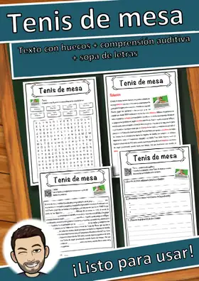
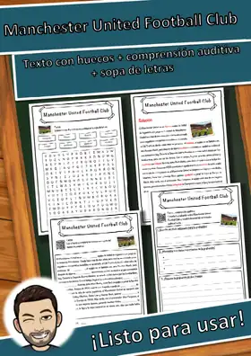
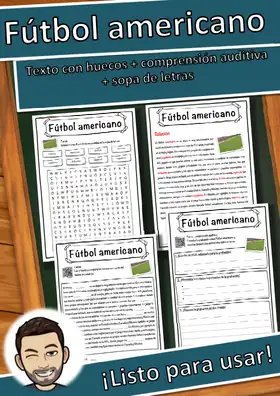
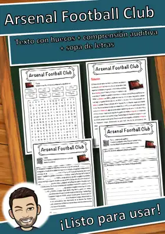
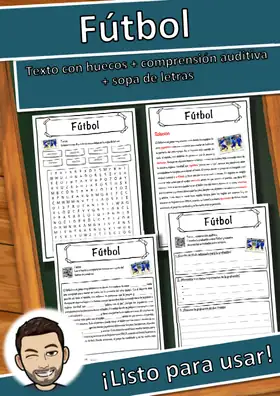
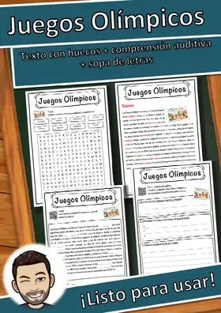
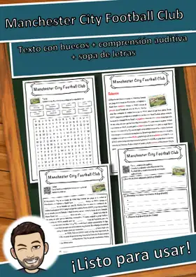
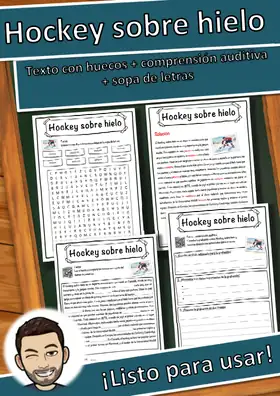
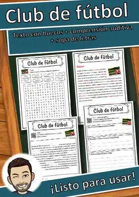

Fichas de Deportes – 5.º de primaria
30 recursos de Deportes para 5.º de primaria, listos para imprimir: Tenis de mesa, Manchester United Football Club, Fútbol americano, Deportes de motor y más. Cada ficha muestra el nivel, el número de páginas y una vista previa, y enlaza directamente al producto en eduki.
30 recursos

Tenis de mesa – Ficha: texto con huecos, comprensión auditiva y sopa de letras

Manchester United Football Club – Ficha: texto con huecos, comprensión auditiva y sopa de letras

Fútbol americano – Ficha: texto con huecos, comprensión auditiva y sopa de letras
Deportes de motor – Ficha: texto con huecos, comprensión auditiva y sopa de letras
Copa Mundial de Fútbol – Ficha: texto con huecos, comprensión auditiva y sopa de letras

Arsenal Football Club – Ficha: texto con huecos, comprensión auditiva y sopa de letras

Fútbol – Ficha: texto con huecos, comprensión auditiva y sopa de letras

Juegos Olímpicos – Ficha: texto con huecos, comprensión auditiva y sopa de letras

Manchester City Football Club – Ficha: texto con huecos, comprensión auditiva y sopa de letras
Deporte de invierno – Ficha: texto con huecos, comprensión auditiva y sopa de letras

Hockey sobre hielo – Ficha: texto con huecos, comprensión auditiva y sopa de letras
Liverpool Football Club – Ficha: texto con huecos, comprensión auditiva y sopa de letras
Tenis – Ficha: texto con huecos, comprensión auditiva y sopa de letras
Hockey sobre césped – Ficha: texto con huecos, comprensión auditiva y sopa de letras
Calcio – Ficha: texto con huecos, comprensión auditiva y sopa de letras

Club de fútbol – Ficha: texto con huecos, comprensión auditiva y sopa de letras
Taller de deporte Atletismo: Tarjetas de tareas en 3 niveles, minijuegos y prueba corta
Taller de deporte Atletismo: Tarjetas de tareas en 3 niveles, minijuegos y prueba corta
Taller de deporte Juegos y relevos: Tarjetas de tareas en 3 niveles, minijuegos y prueba corta
Taller de deporte Juegos y relevos: Tarjetas de tareas en 3 niveles, minijuegos y prueba corta
Taller de deporte Escalada y equilibrios: Tarjetas de tareas en 3 niveles, minijuegos y prueba corta
Taller de deporte Escalada y equilibrios: Tarjetas de tareas en 3 niveles, minijuegos y prueba corta
Taller de deporte Danza y expresión corporal: Tarjetas de tareas en 3 niveles, minijuegos y prueba c
Taller de deporte Danza y expresión corporal: Tarjetas de tareas en 3 niveles, minijuegos y prueba c
Taller de deporte Hockey sala (floorball): Tarjetas de tareas en 3 niveles, minijuegos y prueba cort
Taller de deporte Hockey sala (floorball): Tarjetas de tareas en 3 niveles, minijuegos y prueba cort
Taller de deporte Tenis de mesa: Tarjetas de tareas en 3 niveles, minijuegos y prueba corta
Taller de deporte Tenis de mesa: Tarjetas de tareas en 3 niveles, minijuegos y prueba corta
Taller de deporte Bádminton: Tarjetas de tareas en 3 niveles, minijuegos y prueba corta
Taller de deporte Bádminton: Tarjetas de tareas en 3 niveles, minijuegos y prueba corta
Taller de deporte Natación y normas de seguridad: Tarjetas de tareas en 3 niveles, minijuegos y prue
Taller de deporte Natación y normas de seguridad: Tarjetas de tareas en 3 niveles, minijuegos y prue
Taller de deporte Gimnasia deportiva: Tarjetas de tareas en 3 niveles, minijuegos y prueba corta
Taller de deporte Gimnasia deportiva: Tarjetas de tareas en 3 niveles, minijuegos y prueba corta
Taller de deporte Atletismo: correr, saltar y lanzar: Tarjetas de tareas en 3 niveles, minijuegos y
Taller de deporte Atletismo: correr, saltar y lanzar: Tarjetas de tareas en 3 niveles, minijuegos y
Taller de deporte Balonmano: Tarjetas de tareas en 3 niveles, minijuegos y prueba corta
Taller de deporte Balonmano: Tarjetas de tareas en 3 niveles, minijuegos y prueba corta
Taller de deporte Voleibol: Tarjetas de tareas en 3 niveles, minijuegos y prueba corta
Taller de deporte Voleibol: Tarjetas de tareas en 3 niveles, minijuegos y prueba corta
Taller de deporte Fútbol: Tarjetas de tareas en 3 niveles, minijuegos y prueba corta
Taller de deporte Fútbol: Tarjetas de tareas en 3 niveles, minijuegos y prueba corta
Taller de deporte Baloncesto: Tarjetas de tareas en 3 niveles, minijuegos y prueba corta
Taller de deporte Baloncesto: Tarjetas de tareas en 3 niveles, minijuegos y prueba corta
No se encontraron recursos. Prueba con otra palabra o con otro filtro.